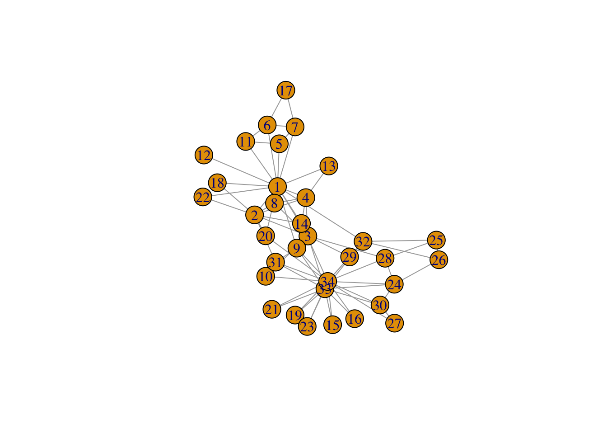
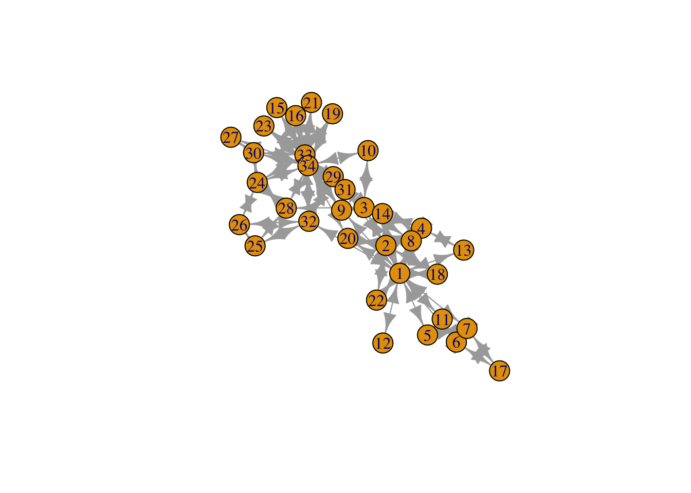
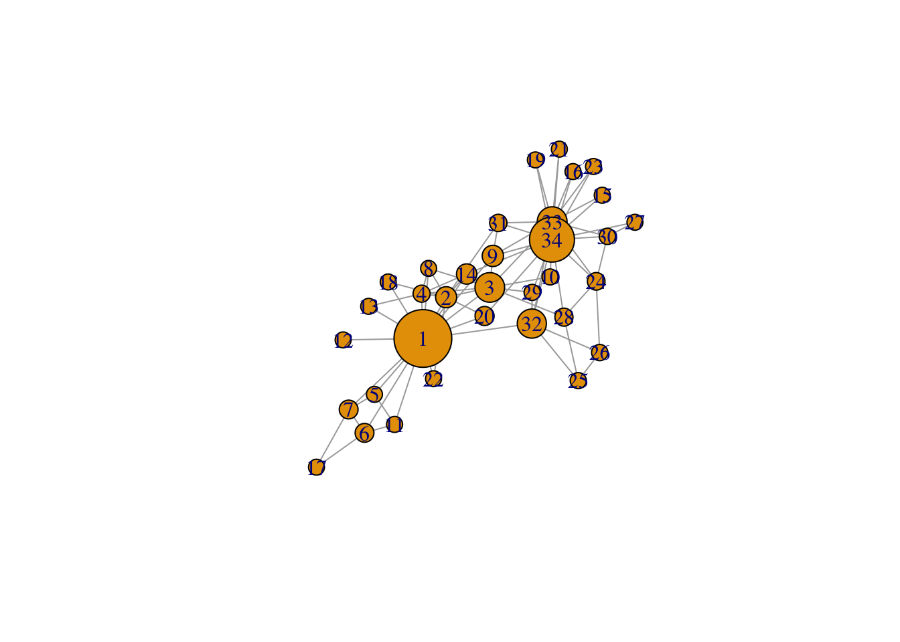
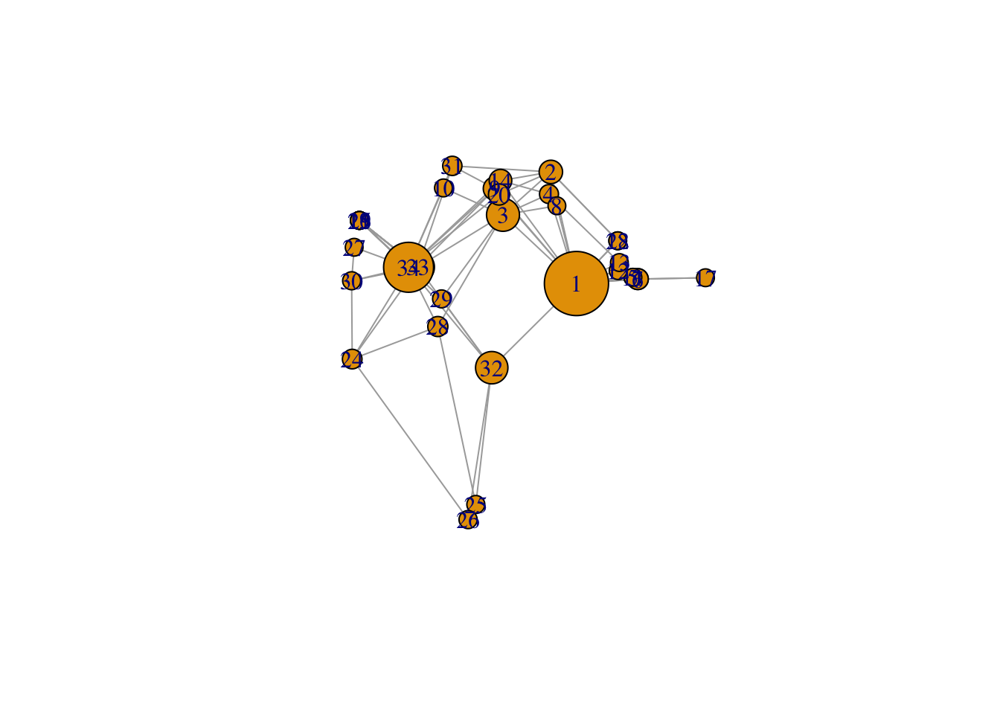
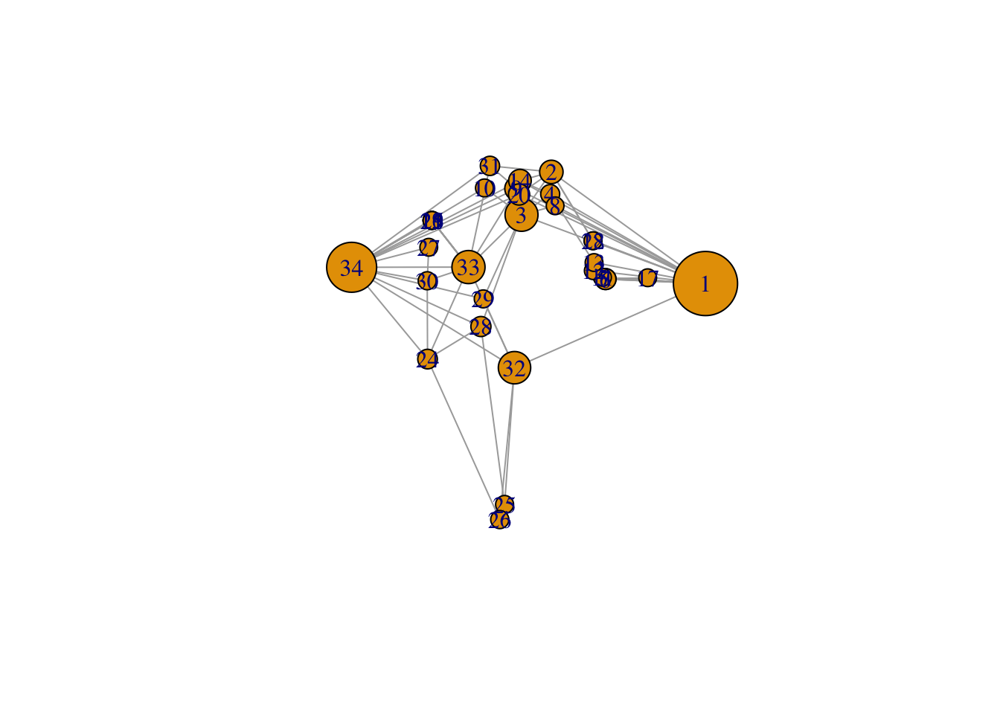
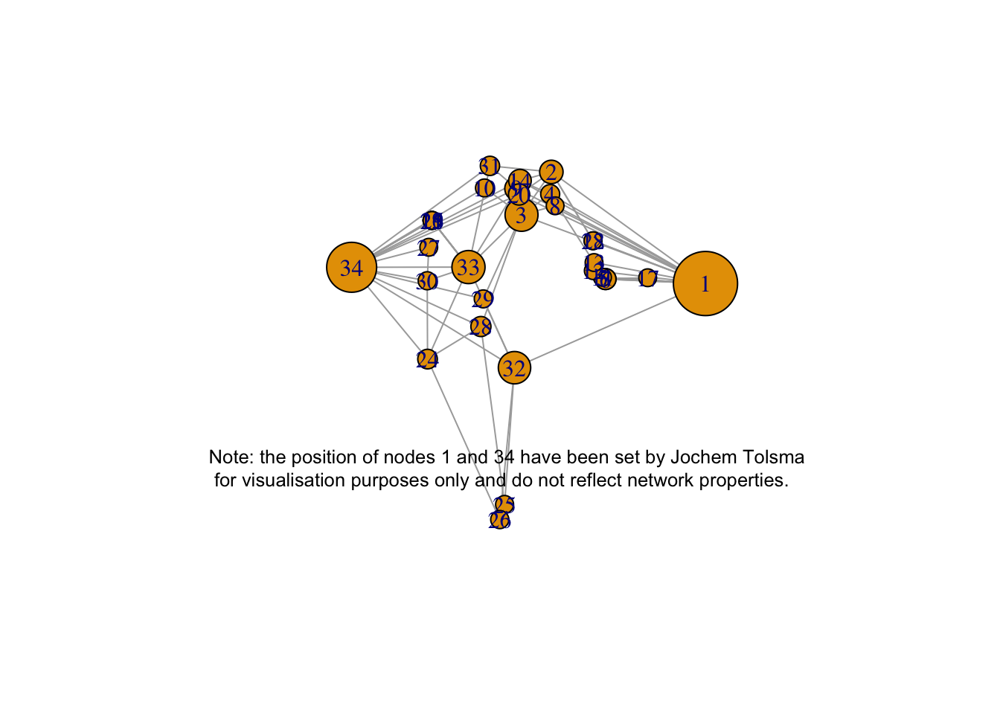

# start with clean workspace
rm(list = ls())
require(RSelenium)
require(RSiena)
require(scholar)
require(tidyverse)
require(openalexR)
require(jsonlite)
require(lavaan)
require(xml2)
require(rvest)
require(kableExtra)
require(devtools)
require(igraph)
require(network)
require(sna)
require(ggraph)
require(visNetwork)
require(threejs)
require(networkD3)
# require(ndtv)`?`(`?`(Zachary))#> No vignettes or demos or help files found with alias or concept or title matching
#> 'Zachary' using fuzzy matching.g <- make_graph("Zachary")
plot(g)
gmat <- as_adjacency_matrix(g, type = "both", sparse = FALSE)
(gmat)#> [,1] [,2] [,3] [,4] [,5] [,6] [,7] [,8] [,9] [,10] [,11] [,12] [,13] [,14] [,15] [,16] [,17]
#> [1,] 0 1 1 1 1 1 1 1 1 0 1 1 1 1 0 0 0
#> [2,] 1 0 1 1 0 0 0 1 0 0 0 0 0 1 0 0 0
#> [3,] 1 1 0 1 0 0 0 1 1 1 0 0 0 1 0 0 0
#> [4,] 1 1 1 0 0 0 0 1 0 0 0 0 1 1 0 0 0
#> [5,] 1 0 0 0 0 0 1 0 0 0 1 0 0 0 0 0 0
#> [6,] 1 0 0 0 0 0 1 0 0 0 1 0 0 0 0 0 1
#> [7,] 1 0 0 0 1 1 0 0 0 0 0 0 0 0 0 0 1
#> [8,] 1 1 1 1 0 0 0 0 0 0 0 0 0 0 0 0 0
#> [9,] 1 0 1 0 0 0 0 0 0 0 0 0 0 0 0 0 0
#> [10,] 0 0 1 0 0 0 0 0 0 0 0 0 0 0 0 0 0
#> [11,] 1 0 0 0 1 1 0 0 0 0 0 0 0 0 0 0 0
#> [12,] 1 0 0 0 0 0 0 0 0 0 0 0 0 0 0 0 0
#> [13,] 1 0 0 1 0 0 0 0 0 0 0 0 0 0 0 0 0
#> [14,] 1 1 1 1 0 0 0 0 0 0 0 0 0 0 0 0 0
#> [15,] 0 0 0 0 0 0 0 0 0 0 0 0 0 0 0 0 0
#> [16,] 0 0 0 0 0 0 0 0 0 0 0 0 0 0 0 0 0
#> [17,] 0 0 0 0 0 1 1 0 0 0 0 0 0 0 0 0 0
#> [18,] 1 1 0 0 0 0 0 0 0 0 0 0 0 0 0 0 0
#> [19,] 0 0 0 0 0 0 0 0 0 0 0 0 0 0 0 0 0
#> [20,] 1 1 0 0 0 0 0 0 0 0 0 0 0 0 0 0 0
#> [21,] 0 0 0 0 0 0 0 0 0 0 0 0 0 0 0 0 0
#> [22,] 1 1 0 0 0 0 0 0 0 0 0 0 0 0 0 0 0
#> [23,] 0 0 0 0 0 0 0 0 0 0 0 0 0 0 0 0 0
#> [24,] 0 0 0 0 0 0 0 0 0 0 0 0 0 0 0 0 0
#> [25,] 0 0 0 0 0 0 0 0 0 0 0 0 0 0 0 0 0
#> [26,] 0 0 0 0 0 0 0 0 0 0 0 0 0 0 0 0 0
#> [27,] 0 0 0 0 0 0 0 0 0 0 0 0 0 0 0 0 0
#> [28,] 0 0 1 0 0 0 0 0 0 0 0 0 0 0 0 0 0
#> [29,] 0 0 1 0 0 0 0 0 0 0 0 0 0 0 0 0 0
#> [30,] 0 0 0 0 0 0 0 0 0 0 0 0 0 0 0 0 0
#> [31,] 0 1 0 0 0 0 0 0 1 0 0 0 0 0 0 0 0
#> [32,] 1 0 0 0 0 0 0 0 0 0 0 0 0 0 0 0 0
#> [33,] 0 0 1 0 0 0 0 0 1 0 0 0 0 0 1 1 0
#> [34,] 0 0 0 0 0 0 0 0 1 1 0 0 0 1 1 1 0
#> [,18] [,19] [,20] [,21] [,22] [,23] [,24] [,25] [,26] [,27] [,28] [,29] [,30] [,31] [,32]
#> [1,] 1 0 1 0 1 0 0 0 0 0 0 0 0 0 1
#> [2,] 1 0 1 0 1 0 0 0 0 0 0 0 0 1 0
#> [3,] 0 0 0 0 0 0 0 0 0 0 1 1 0 0 0
#> [4,] 0 0 0 0 0 0 0 0 0 0 0 0 0 0 0
#> [5,] 0 0 0 0 0 0 0 0 0 0 0 0 0 0 0
#> [6,] 0 0 0 0 0 0 0 0 0 0 0 0 0 0 0
#> [7,] 0 0 0 0 0 0 0 0 0 0 0 0 0 0 0
#> [8,] 0 0 0 0 0 0 0 0 0 0 0 0 0 0 0
#> [9,] 0 0 0 0 0 0 0 0 0 0 0 0 0 1 0
#> [10,] 0 0 0 0 0 0 0 0 0 0 0 0 0 0 0
#> [11,] 0 0 0 0 0 0 0 0 0 0 0 0 0 0 0
#> [12,] 0 0 0 0 0 0 0 0 0 0 0 0 0 0 0
#> [13,] 0 0 0 0 0 0 0 0 0 0 0 0 0 0 0
#> [14,] 0 0 0 0 0 0 0 0 0 0 0 0 0 0 0
#> [15,] 0 0 0 0 0 0 0 0 0 0 0 0 0 0 0
#> [16,] 0 0 0 0 0 0 0 0 0 0 0 0 0 0 0
#> [17,] 0 0 0 0 0 0 0 0 0 0 0 0 0 0 0
#> [18,] 0 0 0 0 0 0 0 0 0 0 0 0 0 0 0
#> [19,] 0 0 0 0 0 0 0 0 0 0 0 0 0 0 0
#> [20,] 0 0 0 0 0 0 0 0 0 0 0 0 0 0 0
#> [21,] 0 0 0 0 0 0 0 0 0 0 0 0 0 0 0
#> [22,] 0 0 0 0 0 0 0 0 0 0 0 0 0 0 0
#> [23,] 0 0 0 0 0 0 0 0 0 0 0 0 0 0 0
#> [24,] 0 0 0 0 0 0 0 0 1 0 1 0 1 0 0
#> [25,] 0 0 0 0 0 0 0 0 1 0 1 0 0 0 1
#> [26,] 0 0 0 0 0 0 1 1 0 0 0 0 0 0 1
#> [27,] 0 0 0 0 0 0 0 0 0 0 0 0 1 0 0
#> [28,] 0 0 0 0 0 0 1 1 0 0 0 0 0 0 0
#> [29,] 0 0 0 0 0 0 0 0 0 0 0 0 0 0 1
#> [30,] 0 0 0 0 0 0 1 0 0 1 0 0 0 0 0
#> [31,] 0 0 0 0 0 0 0 0 0 0 0 0 0 0 0
#> [32,] 0 0 0 0 0 0 0 1 1 0 0 1 0 0 0
#> [33,] 0 1 0 1 0 1 1 0 0 0 0 0 1 1 1
#> [34,] 0 1 1 1 0 1 1 0 0 1 1 1 1 1 1
#> [,33] [,34]
#> [1,] 0 0
#> [2,] 0 0
#> [3,] 1 0
#> [4,] 0 0
#> [5,] 0 0
#> [6,] 0 0
#> [7,] 0 0
#> [8,] 0 0
#> [9,] 1 1
#> [10,] 0 1
#> [11,] 0 0
#> [12,] 0 0
#> [13,] 0 0
#> [14,] 0 1
#> [15,] 1 1
#> [16,] 1 1
#> [17,] 0 0
#> [18,] 0 0
#> [19,] 1 1
#> [20,] 0 1
#> [21,] 1 1
#> [22,] 0 0
#> [23,] 1 1
#> [24,] 1 1
#> [25,] 0 0
#> [26,] 0 0
#> [27,] 0 1
#> [28,] 0 1
#> [29,] 0 1
#> [30,] 1 1
#> [31,] 1 1
#> [32,] 1 1
#> [33,] 0 1
#> [34,] 1 0# number of nodes
vcount(g)#> [1] 34# number of edges
ecount(g)#> [1] 78igraph::degree(g)#> [1] 16 9 10 6 3 4 4 4 5 2 3 1 2 5 2 2 2 2 2 3 2 2 2 5 3 3 2 4 3 4 4 6
#> [33] 12 17# hist(table(degree(g)), xlab='indegree', main= 'Histogram of indegree')
`?`(dyad_census)# be aware that directed graphs are considered as undirected. but g is undirected.
igraph::transitivity(g, type = c("localundirected"), isolates = c("NaN", "zero"))#> [1] 0.1500000 0.3333333 0.2444444 0.6666667 0.6666667 0.5000000 0.5000000 1.0000000 0.5000000
#> [10] 0.0000000 0.6666667 NaN 1.0000000 0.6000000 1.0000000 1.0000000 1.0000000 1.0000000
#> [19] 1.0000000 0.3333333 1.0000000 1.0000000 1.0000000 0.4000000 0.3333333 0.3333333 1.0000000
#> [28] 0.1666667 0.3333333 0.6666667 0.5000000 0.2000000 0.1969697 0.1102941igraph::betweenness(g, directed = FALSE)#> [1] 231.0714286 28.4785714 75.8507937 6.2880952 0.3333333 15.8333333 15.8333333 0.0000000
#> [9] 29.5293651 0.4476190 0.3333333 0.0000000 0.0000000 24.2158730 0.0000000 0.0000000
#> [17] 0.0000000 0.0000000 0.0000000 17.1468254 0.0000000 0.0000000 0.0000000 9.3000000
#> [25] 1.1666667 2.0277778 0.0000000 11.7920635 0.9476190 1.5428571 7.6095238 73.0095238
#> [33] 76.6904762 160.5515873g_dir <- igraph::as.directed(g, mode = "mutual")
igraph::dyad_census(g_dir)#> $mut
#> [1] 78
#>
#> $asym
#> [1] 0
#>
#> $null
#> [1] 483igraph::triad_census(g_dir)#> [1] 3971 0 1575 0 0 0 0 0 0 0 393 0 0 0 0 45# I will use sna because it shows the names of the triads as well.
sna::triad.census(gmat)#> 003 012 102 021D 021U 021C 111D 111U 030T 030C 201 120D 120U 120C 210 300
#> [1,] 3971 0 1575 0 0 0 0 0 0 0 393 0 0 0 0 45`?`(triad_census)
plot(g_dir)
detach("package:ndtv", unload = TRUE)
unloadNamespace("sna") #I will detach this package again, otherwise it will interfere with all kind of functions from igraph, and my students will hate me for that.igraph::transitivity(g, type = "global")#> [1] 0.2556818sna::gtrans(gmat)#> [1] 0.2556818triad_g <- data.frame(sna::triad.census(gmat))
transitivity_g <- (3 * triad_g$X300)/(triad_g$X201 + 3 * triad_g$X300)
transitivity_g#> [1] 0.2556818# changing V
V(g)$size = igraph::betweenness(g, normalized = T, directed = FALSE) * 60 + 10 #after some trial and error
plot(g, mode = "undirected")
set.seed(2345)
l <- layout_with_mds(g) #https://igraph.org/r/doc/layout_with_mds.html
plot(g, layout = l)
l #let us take a look at the coordinates#> [,1] [,2]
#> [1,] 1.070931935 -0.172458113
#> [2,] 0.732844464 0.754023309
#> [3,] 0.100582299 0.397693607
#> [4,] 0.708246655 0.570205545
#> [5,] 1.816293170 -0.120778206
#> [6,] 1.881329566 -0.135518854
#> [7,] 1.881329566 -0.135518854
#> [8,] 0.812606714 0.472619437
#> [9,] -0.003769996 0.615513628
#> [10,] -0.685680315 0.621065149
#> [11,] 1.816293170 -0.120778206
#> [12,] 1.621247830 -0.065820692
#> [13,] 1.637845123 0.001789972
#> [14,] 0.067317230 0.681421148
#> [15,] -1.796316404 0.351417630
#> [16,] -1.796316404 0.351417630
#> [17,] 2.775260452 -0.124317652
#> [18,] 1.616210024 0.182510197
#> [19,] -1.796316404 0.351417630
#> [20,] 0.048362858 0.566654982
#> [21,] -1.796316404 0.351417630
#> [22,] 1.616210024 0.182510197
#> [23,] -1.796316404 0.351417630
#> [24,] -1.891240567 -0.799574907
#> [25,] -0.258345165 -2.006346563
#> [26,] -0.360530857 -2.131642875
#> [27,] -1.865177401 0.128596564
#> [28,] -0.760226022 -0.529392331
#> [29,] -0.710979936 -0.299960128
#> [30,] -1.898426916 -0.149398746
#> [31,] -0.568691923 0.804189411
#> [32,] -0.048136037 -0.870967614
#> [33,] -1.023681000 -0.035802363
#> [34,] -1.146442924 -0.037605192l[1, 1] <- 4
l[34, 1] <- -3.5
plot(g, layout = l)
plot(g, layout = l, margin = c(0, 0, 0, 0))
legend(x = -2, y = -0.5, c("Note: the position of nodes 1 and 34 have been set by Jochem Tolsma \n for visualisation purposes only and do not reflect network properties."),
bty = "n", cex = 0.8)